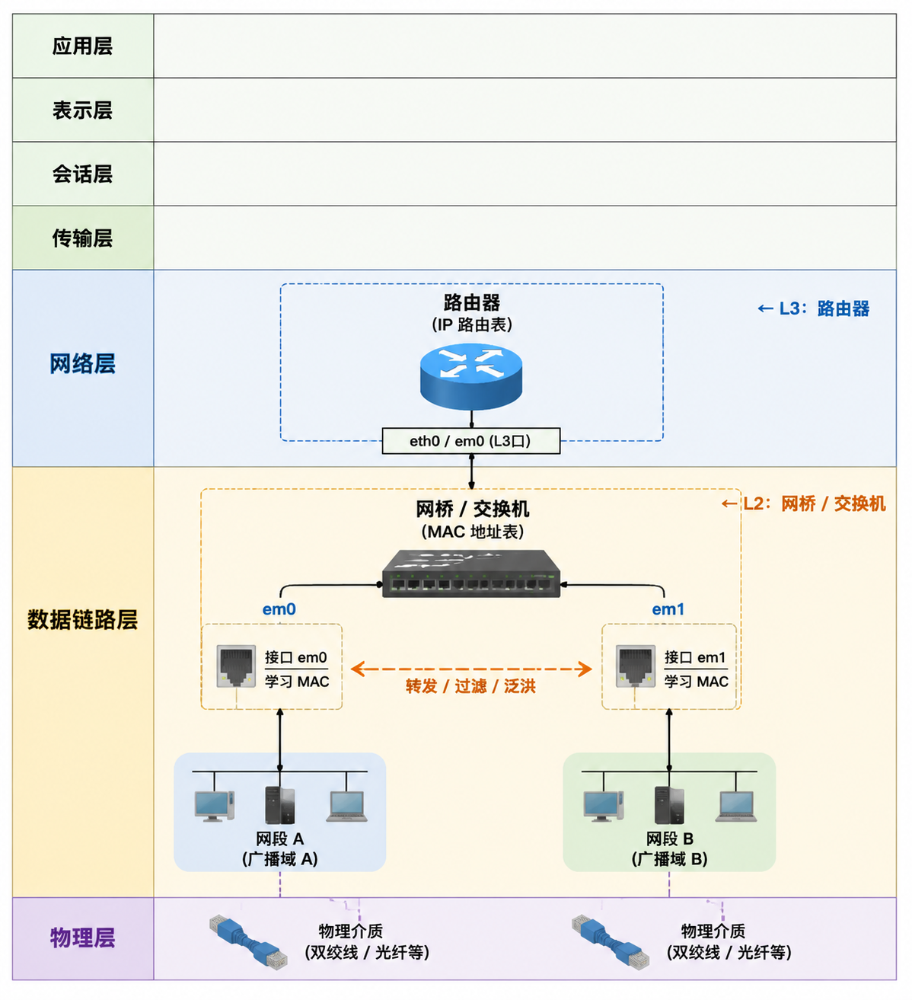

网桥
Table of Contents
有时需将以太网等网络划分为多个网段，而无需创建 IP 子网或使用路由器连接这些网段。连接两个网络的设备称为 网桥 Bridge
网桥知道各网络接口上设备的 MAC 地址，仅在源和目标 MAC 地址位于不同网段时才转发流量 本质上，现代以太网交换机即是一种多端口网桥 可配置具有多个网络接口的 FreeBSD 系统作为网桥设备
概述
网桥是一种工作在 OSI 数据链路层的网络互联设备，其核心工作机制是基于 MAC 物理地址 地址表对数据帧进行过滤与转发。在物理拓扑上
- 网桥能够将一个大型局域网从逻辑上划分为多个独立的冲突域，从而有效减少网络拥堵
- 同时，它也能将多个分散的物理网段整合为一个统一的逻辑局域网，确保网络内的所有节点都能在同一个二层广播域中实现透明的互访与资源调度
- 当网桥在某接口接收到广播帧或多播帧时，向其他接口转发 泛洪 Flooding
- Flooding是交换机和网桥使用的一种数据流传递技术，将某个接口收到的数据流从除该接口之外的所有接口发送出去
网桥在 OSI 模型中的位置及其核心工作机制：

在实际应用中，主要有四种类型的网桥：
| 类型 | 说明 |
| 透明网桥 | 现代交换机的前身 |
| 源地址路由网桥 | IBM 令牌环网 |
| 转换网桥 | 连接以太网与令牌环网或 FDDI 网络 |
| 源地址路由-转换网桥 | 以太网与令牌环混合 |
除透明网桥外的网桥技术已不再是主流技术。因此，本节仅讨论透明网桥
透明网桥
透明网桥 Transparent Bridging 用于连接物理介质类型相同的局域网，主要应用在以太网环境中。透明网桥通常保存着一张 网桥表 ，该网桥表记录 目的 MAC 地址 与 接口 之间的对应关系
- 网桥依据网桥表转发，网桥表由 MAC 地址和接口两部分组成
- 网桥与物理网段相连时，会监测该物理网段上的所有以太网帧
- 一旦监测到某个接口上节点发来的以太网帧，就提取出该帧的源 MAC 地址，并将该 MAC 地址与接收该帧的接口之间的对应关系加入到网桥地址表中
网桥在以下场景中尤为适用
连接网络
网桥的基本操作是将两个或多个网段相互连接
使用基于主机的网桥而非专用网络设备的原因有多种，例如电缆限制或防火墙问题 网桥还可将运行于 hostap 模式的无线接口与有线网络连接，并作为接入点使用
过滤/流量整形防火墙
当需防火墙功能而不涉及路由或网络地址转换 NAT 时，可使用网桥
例如，某小型公司通过光纤宽带连接到 ISP，ISP 分配了一个 /29 的公网 IPv4 地址块（6 个可用地址），公司网络中有四台服务器需要直接使用公网地址对外提供服务 在这种情况下，使用基于路由器的防火墙会遇到子网划分和 NAT 配置的问题: 服务器将无法直接使用原有的公网地址 而基于网桥的防火墙工作在第二层，无需额外划分子网或进行地址转换，服务器可继续使用原有的公网地址，同时防火墙仍能对流量进行过滤
网络分流器 TAP
网桥可连接两个网段，以便使用 bpf(4) 和 tcpdump(1) 在网桥接口上检查流经网桥的所有以太网帧，或将所有帧的副本发送到另一个称为 span 端口的接口以供检查
第 2 层 VPN L2 VPN
可通过网桥网络经由 IP 链接连接两个以太网，采用 EtherIP 隧道或基于 tap(4) 的解决方案，如 OpenVPN
二层冗余
可通过多条链路连接网络，并使用生成树协议（STP）阻止冗余路径
数据包过滤可与接入 pfil(9) 框架的防火墙软件包配合使用 网桥还可配合 altq(4) 或 dummynet(4) 作为流量整形器使用
转发与过滤
以太网 1（192.168.1.0/24）
════════════════════════════════════════════════════════════
Host A Host B
┌───────────────────┐ ┌───────────────────┐
│ IP : 192.168.1.2 │ │ IP : 192.168.1.3 │
│ MAC: AA:AA:AA:AA │ │ MAC: BB:BB:BB:BB │
│ :AA:01 │ │ :BB:01 │
└─────────┬─────────┘ └─────────┬─────────┘
│ │
└──────────────┬─────────────────────┘
│
[ 接口 1 ]
MAC: 00:11:22:33:44:01
┌────────────────┐
│ 网 桥 │
│ Bridge │
└────────────────┘
MAC: 00:11:22:33:44:02
[ 接口 2 ]
│
┌──────────────┴─────────────────────┐
│ │
┌─────────┴─────────┐ ┌─────────┴─────────┐
│ IP : 192.168.2.2 │ │ IP : 192.168.2.3 │
│ MAC: CC:CC:CC:CC │ │ MAC: DD:DD:DD:DD │
│ :CC:01 │ │ :DD:01 │
└───────────────────┘ └───────────────────┘
Host C Host D
════════════════════════════════════════════════════════════
以太网 2（192.168.2.0/24）
网桥学习完成后的地址表：
| MAC 地址 | 接口 |
| AA:AA:AA:AA:AA:01 | 接口1 |
| BB:BB:BB:BB:BB:01 | 接口1 |
| CC:CC:CC:CC:CC:01 | 接口2 |
| DD:DD:DD:DD:DD:01 | 接口2 |
情况 1：Host A → Host C（转发）
Host A Host C
192.168.1.2 192.168.2.2
AA:AA:AA:AA:AA:01 CC:CC:CC:CC:CC:01
以太网帧
┌───────────────────────┐
│ Src = AA:AA:AA:AA:01 │
│ Dst = CC:CC:CC:CC:01 │
└───────────────────────┘
│
▼
[接口1] → [网桥] → [接口2]
网桥查表：
CC:CC:CC:CC:CC:01 → 接口2
因此转发到接口2
│
▼
Host C 收到
情况 2：Host A → Host B（过滤）
Host A Host B
192.168.1.2 192.168.1.3
AA:AA:AA:AA:AA:01 BB:BB:BB:BB:BB:01
以太网帧
┌───────────────────────┐
│ Src = AA:AA:AA:AA:01 │
│ Dst = BB:BB:BB:BB:01 │
└───────────────────────┘
│
▼
[接口 1] → [网桥]
网桥查表：
BB:BB:BB:BB:BB:01 → 接口 1
目的接口 = 接收接口
因此：
╳ 不转发
╳ 不发送到接口2
Host B 已经直接在以太网 1 上收到该帧
情况 3：Host A → 未知主机（泛洪）
Host A
192.168.1.2
AA:AA:AA:AA:AA:01
以太网帧
┌───────────────────────┐
│ Src = AA:AA:AA:AA:01 │
│ Dst = EE:EE:EE:EE:01 │
└───────────────────────┘
│
▼
[接口 1] → [网桥]
查表：
EE:EE:EE:EE:EE:01
↓
未找到
因此进行泛洪(Flooding)
┌─────────────► Host C
│
[接口1] → [网桥]
│
└─────────────► Host D
情况 4：广播帧
Host A
以太网帧
┌─────────────────────────┐
│ Src = AA:AA:AA:AA:AA:01 │
│ Dst = FF:FF:FF:FF:FF:FF │
└─────────────────────────┘
│
▼
[接口 1] → [网桥]
广播地址
FF:FF:FF:FF:FF:FF
网桥必须转发到其它接口
┌─────────────► Host C
│
[接口1] → [网桥]
│
└─────────────► Host D
地址学习过程：
步骤 1
Host A 发帧
AA:AA:AA:AA:AA:01
│
▼
接口 1
网桥记录：
AA:AA:AA:AA:AA:01 → 接口 1
步骤 2
Host B 回复
BB:BB:BB:BB:BB:01
│
▼
接口 1
网桥记录：
BB:BB:BB:BB:BB:01 → 接口 1
步骤 3
Host C 发帧
CC:CC:CC:CC:CC:01
│
▼
接口 2
网桥记录：
CC:CC:CC:CC:CC:01 → 接口 2
步骤 4
Host D 发帧
DD:DD:DD:DD:DD:01
│
▼
接口 2
网桥记录：
DD:DD:DD:DD:DD:01 → 接口 2
最终网桥掌握整个二层网络拓扑：
| MAC 地址 | 对应接口 |
| AA:AA:AA:AA:AA:01 | 接口1 |
| BB:BB:BB:BB:BB:01 | 接口1 |
| CC:CC:CC:CC:CC:01 | 接口2 |
| DD:DD:DD:DD:DD:01 | 接口2 |
IP 地址仅用于主机通信 网桥工作在数据链路层（第二层），学习和转发依据的是 MAC 地址而非 IP 地址
启用网桥
在 FreeBSD 中，当创建网桥接口时，系统会通过 ifconfig(8) 自动加载内核模块 if_bridge 。网桥需通过接口克隆的方式创建。要创建网桥接口，可使用以下命令：
$ ifconfig bridge create bridge0 $ ifconfig bridge0 bridge0: flags=8802<BROADCAST,SIMPLEX,MULTICAST> metric 0 mtu 1500 options=10<VLAN_HWTAGGING> ether 58:9c:fc:10:12:5b id 00:00:00:00:00:00 priority 32768 hellotime 2 fwddelay 15 maxage 20 holdcnt 6 proto rstp maxaddr 2000 timeout 1200 root id 00:00:00:00:00:00 priority 0 ifcost 0 port 0 bridge flags=0<> groups: bridge nd6 options=809<PERFORMNUD,IFDISABLED,STABLEADDR>
当创建网桥接口时，它会自动分配一个随机生成的以太网地址。
maxaddr 参数控制网桥转发表中保留的 MAC 地址数量
上例为 2000 条
timeout 参数控制每个条目在最后一次出现后多少秒将被删除
上例为 1200 秒（20 分钟）
- rstp 意味着使用 RSTP 协议
其他参数则控制生成树协议（STP）的操作方式
接下来，指定要添加 addm add member 到网桥中的网络接口：
$ ifconfig bridge0 addm em0 addm em1 up
网桥转发数据包要求所有成员接口和网桥接口均处于启用状态：
$ ifconfig em0 up $ ifconfig em1 up
现在，网桥可在 em0 和 em1 之间转发以太网帧
bridge0: flags=1008843<UP,BROADCAST,RUNNING,SIMPLEX,MULTICAST,LOWER_UP> metric 0 mtu 1500 options=10<VLAN_HWTAGGING> ether 58:9c:fc:10:12:5b id 00:00:00:00:00:00 priority 32768 hellotime 2 fwddelay 15 maxage 20 holdcnt 6 proto rstp maxaddr 2000 timeout 1200 root id 00:00:00:00:00:00 priority 32768 ifcost 0 port 0 bridge flags=0<> member: em1 flags=143<LEARNING,DISCOVER,AUTOEDGE,AUTOPTP> port 3 priority 128 path cost 20000 vlan protocol 802.1q member: em0 flags=143<LEARNING,DISCOVER,AUTOEDGE,AUTOPTP> port 1 priority 128 path cost 20000 vlan protocol 802.1q groups: bridge nd6 options=809<PERFORMNUD,IFDISABLED,STABLEADDR>
若需在引导时自动创建网桥，可将以下内容添加到 /etc/rc.conf 文件中：
cloned_interfaces="bridge0" ifconfig_bridge0="addm em0 addm em1 up" ifconfig_em0="up" ifconfig_em1="up"
如果网桥主机需 IP 地址，应将其配置于网桥接口而非成员接口上。可使用静态 IP 地址或通过 DHCP 设置该地址。以下示例设置了一个静态 IP 地址：
$ ifconfig bridge0 inet 192.168.0.1/24
也可为网桥接口分配 IPv6 地址。若需使更改永久生效，可将地址信息添加到 /etc/rc.conf 文件中
启用数据包过滤时，网桥的数据包将分别在网桥接口的源接口和目标接口的入站与出站方向上通过过滤器 可以禁用任何一个阶段。当数据包流向重要时，宜在成员接口上而非网桥接口上进行防火墙设置 网桥有多个可配置的设置，用于传递非 IP 数据包和 IP 数据包，以及与 ipfw(8) 的第二层防火墙功能
启用生成树协议 STP
以太网正常运行要求两个设备之间仅存在一条活跃路径。*生成树协议* STP 用于检测环路，并将冗余链路置于阻塞状态
如果其中一条活跃的链路失败，STP 会计算出一个新的树形结构，并启用其中一条被阻塞的路径，以恢复网络中所有点的连接性
快速生成树协议 RSTP 或 802.1w 与传统的 STP 兼容。RSTP 提供了更快的收敛速度，并与邻近的交换机交换信息，能够快速过渡到转发模式，同时避免产生环路
FreeBSD 支持 RSTP 和 STP 作为操作模式，默认使用 RSTP 模式
可使用 ifconfig(8) 在成员接口上启用 STP。对于成员接口 em0 和 em1，启用 STP 的命令如下：
# 创建网桥 $ ifconfig bridge0 create # 把两块网卡加入网桥 $ ifconfig bridge0 addm em0 addm em1 # 开启 STP 功能 $ ifconfig bridge0 stp em0 stp em1 # 启动网桥 $ ifconfig bridge0 up $ ifconfig em0 up $ ifconfig em1 up
查看该网桥：
$ ifconfig bridge0 bridge0: flags=1008843<UP,BROADCAST,RUNNING,SIMPLEX,MULTICAST,LOWER_UP> metric 0 mtu 1500 options=10<VLAN_HWTAGGING> ether 58:9c:fc:10:12:5b id 00:50:56:28:c8:68 priority 32768 hellotime 2 fwddelay 15 maxage 20 holdcnt 6 proto rstp maxaddr 2000 timeout 1200 root id 00:50:56:28:c8:68 priority 32768 ifcost 0 port 0 bridge flags=0<> member: em1 flags=147<LEARNING,DISCOVER,STP,AUTOEDGE,PTP,AUTOPTP> port 2 priority 128 path cost 20000 proto rstp role backup state discarding vlan protocol 802.1q member: em0 flags=1c7<LEARNING,DISCOVER,STP,AUTOEDGE,PTP,AUTOPTP> port 1 priority 128 path cost 20000 proto rstp role root state forwarding vlan protocol 802.1q groups: bridge nd6 options=809<PERFORMNUD,IFDISABLED,STABLEADDR>
这个网桥的生成树 ID 为 00:50:56:28:c8:68，优先级为 32768 由于生成树 ID 与 root id 相同，这表明该网桥为生成树的根桥
网络中另一个启用了 STP 的网桥如下所示：
$ ifconfig bridge0 bridge0: flags=1008843<UP,BROADCAST,RUNNING,SIMPLEX,MULTICAST,LOWER_UP> metric 0 mtu 1500 options=10<VLAN_HWTAGGING> ether 58:9c:fc:10:12:5b id 00:50:56:2a:53:d9 priority 32768 hellotime 2 fwddelay 15 maxage 20 holdcnt 6 proto rstp maxaddr 2000 timeout 1200 root id 00:50:56:28:c8:68 priority 32768 ifcost 200000 port 1 bridge flags=0<> member: em1 flags=147<LEARNING,DISCOVER,STP,AUTOEDGE,PTP,AUTOPTP> port 2 priority 128 path cost 20000 proto rstp role backup state discarding vlan protocol 802.1q member: em0 flags=1c7<LEARNING,DISCOVER,STP,AUTOEDGE,PTP,AUTOPTP> port 1 priority 128 path cost 20000 proto rstp role designated state forwarding vlan protocol 802.1q groups: bridge nd6 options=809<PERFORMNUD,IFDISABLED,STABLEADDR>
在这行 root id 00:50:56:28:c8:68 priority 32768 ifcost 200000 port 1 中 显示了根桥的 ID 为 00:50:56:28:c8:68，并且从该网桥到根桥的路径成本为 200000，该路径通过 port 1（即 em0）
网桥接口参数
网桥接口具有若干专用的 ifconfig 参数。本节总结了这些参数的一些常见用途
private
私有接口不会将任何流量转发到任何其他被指定为私有接口的端口。所有流量均被无条件阻止，因此不会转发任何以太网帧，包括 ARP 数据包
若需有选择地阻止流量，应使用防火墙
span
镜像端口会将网桥收到的每一个以太网帧复制一份发送出去
- 可为网桥配置多个镜像端口，但如果某个接口被指定为镜像端口，则不能同时作为普通的网桥端口使用
此功能最适合在另一台主机上通过网桥的镜像端口被动监控网桥网络
例如，要将所有帧的副本发送到名为 em4 的接口：
$ ifconfig bridge0 span em4
sticky
如果一个网桥成员接口被标记为 sticky ，那么动态学习到的地址条目会被当作静态条目处理，并存储在转发缓存中。即使该地址在另一个接口上被检测到，sticky 条目也永远不会从缓存中被删除或替换
这提供了静态地址条目的优势，而无需预先填充转发表 客户端在网桥的某个段上学习到的地址不能跳转到其他段
将 sticky 地址与 VLAN 结合使用的一个例子是：隔离客户网络，而不浪费 IP 地址空间。假设 CustomerA 在 vlan100 上，CustomerB 在 vlan101 上，且网桥有地址 192.168.0.1：
$ ifconfig bridge0 addm vlan100 sticky vlan100 addm vlan101 sticky vlan101 $ ifconfig bridge0 inet 192.168.0.1/24
在这个例子中，两个客户都将 192.168.0.1 作为默认网关 由于网桥缓存是 sticky 的，一个主机无法伪造另一个客户的 MAC 地址来截取其流量
可使用防火墙或如上所示的私有接口来阻止 VLAN 之间的任何通信：
$ ifconfig bridge0 private vlan100 private vlan101
这样，客户完全相互隔离，并且可在不划分子网的情况下，分配整个 /24 地址范围
也可限制每个接口后面的唯一源 MAC 地址数量。达到限制后，具有未知源地址的数据包将被丢弃，直到现有主机的缓存条目过期或被移除。以下示例将 CustomerA 在 vlan100 上的以太网设备数量限制为 10：
$ ifconfig bridge0 ifmaxaddr vlan100 10
网桥接口还支持监控模式，在这种模式下，数据包在 bpf(4) 处理后会被丢弃，不会进一步处理或转发
这可用于将两个或更多接口的输入多路复用到单个 bpf(4) 流中 此功能适用于重建网络 Tap 的流量，尤其是那些通过两个独立接口输出 RX/TX 信号的 Tap
例如，要将四个网络接口的输入作为一个流读取：
$ ifconfig bridge0 addm em0 addm em1 addm em2 addm em3 monitor up $ tcpdump -i bridge0
| Next：链路聚合 | Previous: TCP/IP 协议栈 | Home: 高级网络 |